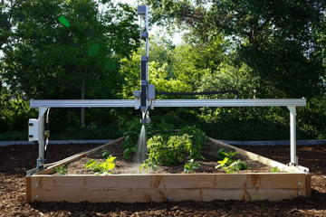

Aldana, A. (2017, February 5). Photo by Arnaldo Aldana on
unsplash. Beautiful Free
Images & Pictures. Retrieved June 6, 2022,
from https://unsplash.com/photos/HfH5yd70ox8
Aldana, A. (2017, February 5). Photo by Arnaldo Aldana on
unsplash. Beautiful Free
Images & Pictures. Retrieved June 6, 2022,
from https://unsplash.com/photos/HfH5yd70ox8
Gardening is for everyone
Gardening is a fun enjoyable relaxing hobby for some, a way of providing food or needs for others. Either way you can benefit in many ways from planting and growing your own garden. With the rise in grocery cost, even a relatively small garden can help offset your grocery bill. With the numerous unhealthy added ingredients in many processed foods at grocery markets, eating from your own garden keeps you eating clean and heathy.
Gardening with busy lives
Often, we have such busy lives that we sidetracked and are not able to provide the time and energy needed to maintain a garden. With the many advances in technology growing everywhere you look; gardening has many new helpful ways to take care of your garden when you don’t always have the time to take care of it yourself. With timed watering systems to garden robots, you can still have a garden without having to always be there tending to you garden yourself. Many products have apps that allow you to check up on and care for your garden from afar. Below are a couple of products that offer help for those who may not have the time but would still like to have a garden.
Helpful Technology
Taking care of your garden is sometimes a chore. With ongoing advances in technology, gardening has numerous products that can help you with your garden. The tertill is solar powered robot designed to find and cut weeds in your garden. The tertill can keep gardens free of weed up to 200 square feet. After roaming around and clearing weeds, it switches to a charging mode until it has recharged the battery. With built in parameters to prevent it from going outside its working area and sensors that prevent it from driving over or cutting your plants.
Tertill Weeding Robot Review. PCMAG. (n.d.). Retrieved June 7, 2022, from https://www.pcmag.com/reviews/tertill-weeding-robotAutomated Gardening
Another technological help for gardening is the farmbot. This does great at getting rid of weeds, but can plant seeds and water your plants automaticly for you as well. For people who want to have a garden and have busy schedules or leave for extended times such as vacations, this can keep your garden maintained for you. The farmbot also monitors the soil and comes with an app that you can use to control the robotic arm and atatched tools with.
 Velasco, J. (2019, July 11). Like roombas for your garden, these robots automate home farming. Digital Trends. Retrieved June 7, 2022, from https://www.digitaltrends.com/home/farmbot-diy-agriculture-gardening-robot/